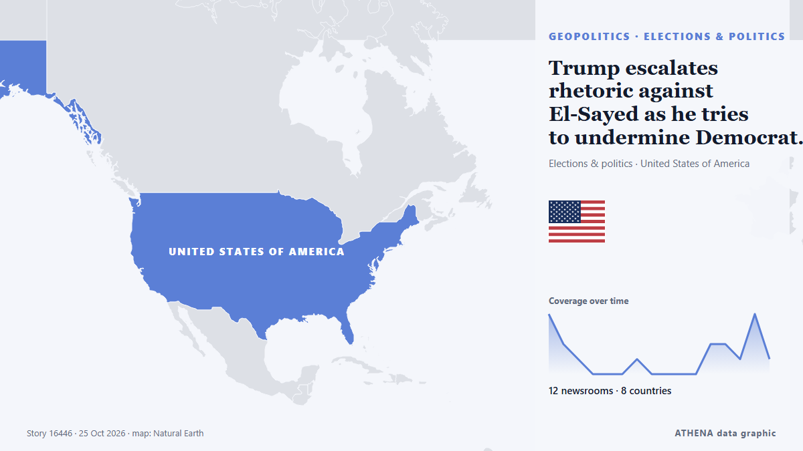

Trump escalates rhetoric against El-Sayed as he tries to undermine Democrat in Michigan Senate race

Trump, who imposed a travel ban targeting several predominantly Muslim countries during his first term, has increasingly leaned into anti-Muslim rhetoric as Election Day approaches. from PBS NewsHour
Reported independently by 12 outlets in 8 countries since 22 Oct, first by The Jerusalem Post; coverage is quiet now. ATHENA rates the risk low (0.7/10), driven mainly by its geographic and sector reach and the quality of the evidence. Confidence is 87% (high), with 12 independent outlets corroborating it and an average source reliability of 78%. Newsrooms by country: Israel (4), Qatar (3), United States (3). Coverage: 22 Oct to 25 Oct, 90 hours.
Why it matters: Security and diplomatic developments can shift alliances, trade and markets well beyond the countries directly involved.
What changed: 10 new reports from 10 newsrooms in the 24 hours to 25 Oct.
First reported as: Abdul El-Sayed appoints Jewish liaison amid Michigan Senate race
At a glance
Selected, scored and written by ATHENA's published methodology. No editor intervenes in individual events. How this is produced ›
| 22 Oct 04:34 UTC | 4 |
|---|---|
| 22 Oct 10:34 UTC | 2 |
| 22 Oct 16:34 UTC | 1 |
| 22 Oct 22:34 UTC | 0 |
| 23 Oct 04:34 UTC | 0 |
| 23 Oct 10:34 UTC | 0 |
| 23 Oct 16:34 UTC | 1 |
| 23 Oct 22:34 UTC | 0 |
| 24 Oct 04:34 UTC | 0 |
| 24 Oct 10:34 UTC | 0 |
| 24 Oct 16:34 UTC | 0 |
| 24 Oct 22:34 UTC | 2 |
| 25 Oct 04:34 UTC | 2 |
| 25 Oct 10:34 UTC | 1 |
| 25 Oct 16:34 UTC | 4 |
| 25 Oct 22:34 UTC | 1 |
| 22 Oct 07:09 UTC | 1.2 |
|---|---|
| 28 Oct 16:42 UTC | 0.7 |
| 28 Oct 16:42 UTC | 0.7 |
Why these numbers
Importance
Risk
Confidence
The reporting — who reported it, and when
headline as published · opens the original- The Jerusalem Post · IsraelAbdul El-Sayed Michigan US Senate campaign hires Jewish outreach director
- Al Jazeera English · QatarEl-Sayed in face-off against rival Rogers for Michigan Senate seat
- The Jerusalem Post · IsraelJews are 'literally afraid' of Michigan's candidate El-Sayed, opponent Rogers says in final debate
- Haaretz (English) · IsraelRogers pitches Republican party to Jewish voters in final Michigan Senate debate against el-Sayed
- PBS NewsHour · United StatesIn final Michigan Senate debate, El-Sayed and Rogers question each other's loyalties
- The New Arab · INTAbdul El-Sayed appoints Jewish liaison amid Michigan Senate race
- Al Jazeera English · QatarMichigan voters closely divided between Rogers and El-Sayed
- NDTV · India'Jihadist, Fake': Trump Attacks Michigan Senate Candidate Abdul El-Sayed
- The Guardian · United KingdomObama rallies rapturous Michigan crowd for El-Sayed: ‘He’ll finish the job we started’
- Al Jazeera English · QatarObama joins El-Sayed in Michigan rally cry before key midterms
- Express Tribune · PakistanObama backs El-Sayed in Michigan Senate race, Trump dismisses rally turnout
- Anadolu Agency (English) · TurkeyObama backs El-Sayed in Michigan Senate race, Trump dismisses rally turnout
- The New Arab · INTTrump campaigns in Michigan a day after Obama rallies Democrats
- The Jerusalem Post · IsraelOver 200 US rabbis demand US Senate candidate El-Sayed make Jewish safety commitments
- The Independent · United KingdomTrump demands metal detectors for Abdul El-Sayed at US capitol as he spews attacks at Democrat during rally
- Arab News · Saudi ArabiaTrump’s midterm swing brings him to Michigan as Republicans aim to undermine El-Sayed in Senate race
- PBS NewsHour · United StatesTrump escalates rhetoric against El-Sayed as he tries to undermine Democrat in Michigan Senate race
- The Hill · United StatesTrump says El-Sayed should have to pass through metal detector to enter Senate